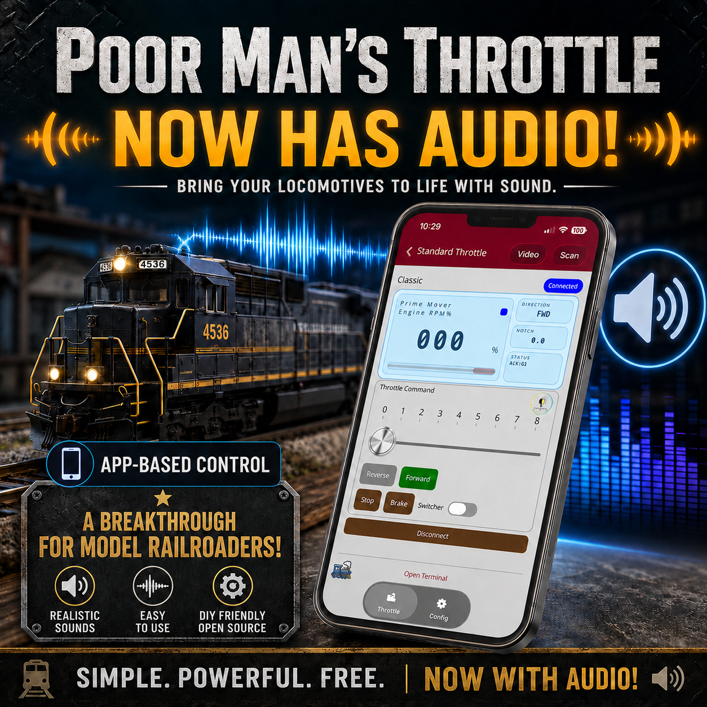
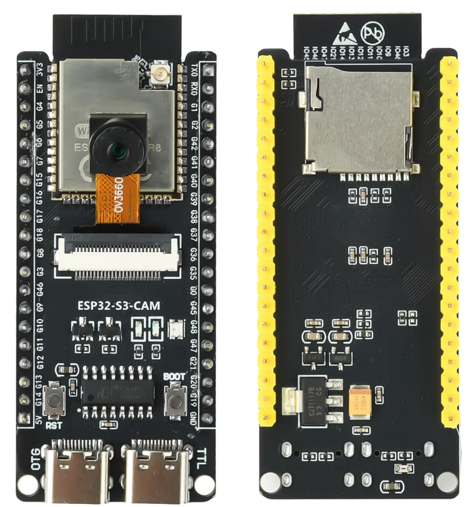
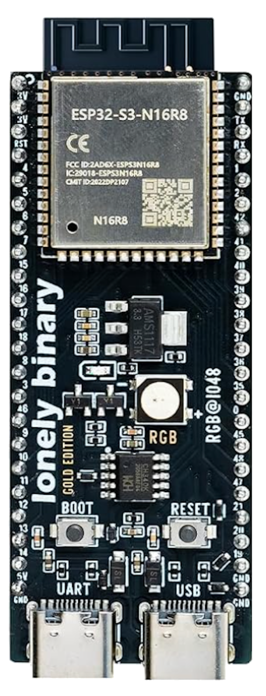
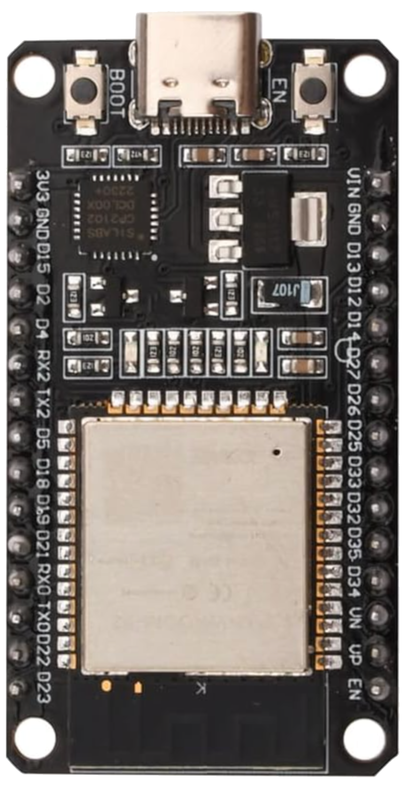

Sound is now part of the throttle
Add the sounds that give a locomotive personality: horns, bells, cab chatter, steam effects, diesel effects, and practically anything else you can put into a WAV file.
Version 3.0 brings real audio to Poor Man's Throttle. Horns, bells, cab chatter, steam, diesel, custom WAV files, and a community-driven sound ecosystem — all controlled from the same PMT experience.

PMT has always been about proving that powerful model railroad control does not have to be locked behind expensive proprietary systems. Version 3.0 takes another major step: full locomotive sound joins the ecosystem. Steam and Diesel starter sound packs are included to get you running immediately, with a community-driven sound library that can grow as users create and share their own audio.
Add the sounds that give a locomotive personality: horns, bells, cab chatter, steam effects, diesel effects, and practically anything else you can put into a WAV file.
PMT does not limit you to a tiny fixed catalog. Upload your own audio, assign it to functions, and build the sound experience that fits your locomotive, railroad, era, or imagination.
Version 3.0 is built around an open idea: railroaders should be able to create sounds, use them, and share them with one another.
Add your own WAV files and tie them to locomotive functions. Build a sound set around your exact prototype, your own recordings, or completely custom effects.
Share audio with other PMT users and benefit from sounds created by fellow model railroaders. More users means more variety and a richer ecosystem for everyone.
You do not have to build everything from scratch. PMT 3.0 includes starter Steam and Diesel sound packs so you can get running with sound quickly and customize from there.
Any suitable WAV can become a function sound. That opens the door to railroad audio, announcements, ambient effects, comedy, custom cues, and things traditional fixed sound systems were never designed to do.
PMT 3.0 supports four practical board choices: the classic ESP32-WROOM-32, ESP32-S3-N16R8, ESP32-S3-N8R8, and the ESP32-S3-CAM development board with ESP32-S3-WROOM N16R8. The S3 boards are the clear choice when sound is a priority.
The ESP32-S3-CAM N16R8 is the recommended PMT 3.0 board. It gives you the S3 performance PMT audio benefits from while also including a microSD card slot directly on the board. That means you do not need to buy or wire a separate SD reader module — just add the audio amplifier. The onboard OV3660 camera is not used by PMT audio and can be removed if you do not want it installed.



The S3 platform can cache audio and support 13 or more voices, providing far more headroom for layered, responsive locomotive sound — especially important for Steam.
The classic ESP32 was pushed hard to make audio fit. It works, but resources are tight. It can be a practical option for Diesel installations where the sound mix is less demanding.
A simple way to choose hardware based on the kind of locomotive sound you want to run.
Recommended for both Diesel and Steam. More voices, cached audio, and substantially more breathing room.
Usable for lighter Diesel needs. Not recommended for Steam because of the heavier layered audio demands.
Choose the recipe that matches the ESP32 you want to use. The important difference is storage: the Classic ESP32 and generic S3 boards need a separate microSD reader, while the ESP32-S3-CAM has the microSD slot built in.
This is the recommended PMT 3.0 audio recipe. It gives you S3-class audio performance with the simplest hardware layout.
No separate microSD reader is required. The ESP32-S3-CAM already has the card slot on the board, eliminating one module, extra wiring, and another part to mount in the locomotive.
The board includes an OV3660 camera, but PMT audio does not use the camera. It can be removed if you do not want it installed. For this application, the important features are the N16R8 S3 hardware and the built-in microSD slot.
This is an excellent PMT 3.0 audio build and supports 13 or more voices, but it requires a separate microSD reader module.
This is the most resource-constrained build. It supports about 3 voices and is best suited to lighter Diesel sound use. Steam sound is not recommended on the Classic board.
This is the final audio stage used in all three recipes. It takes the digital I2S stream from PMT and turns it into amplified speaker output.
It supports both 4Ω and 8Ω speaker loads at approximately 4 watts.
PMT 3.0 is not limited to the included Steam and Diesel packs. You can build your own locomotive sound set from WAV files, tailor it to a specific prototype, and share your work with other PMT users.
Go here when you already understand Audacity basics and mainly need the PMT rules: WAV format, four-digit filenames, Diesel and Steam track maps, loop requirements, recommended durations, and export settings.
Open the Quick Audio Guide →
COMPLETE GUIDEGo here when you want detailed help selecting source recordings, trimming and balancing audio, making seamless loops, building Diesel notches and Steam chuffs, using Audacity, and avoiding common mistakes.
Open the Complete Audio Creation Guide →
Version 3.0 brings PMT into territory normally associated with premium model railroad ecosystems: sophisticated control, consisting, lighting, modules, customization — and now real, flexible locomotive audio.
The difference is philosophy. PMT is built to be accessible, DIY-friendly, extensible, and open to the community. Instead of charging a premium for every new capability, the ecosystem keeps growing around hardware you can understand, customize, and make your own.